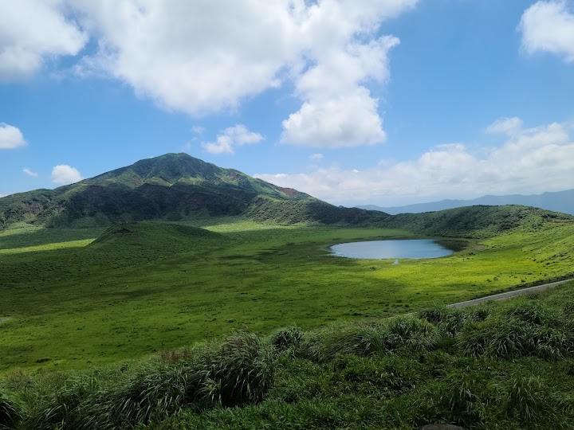
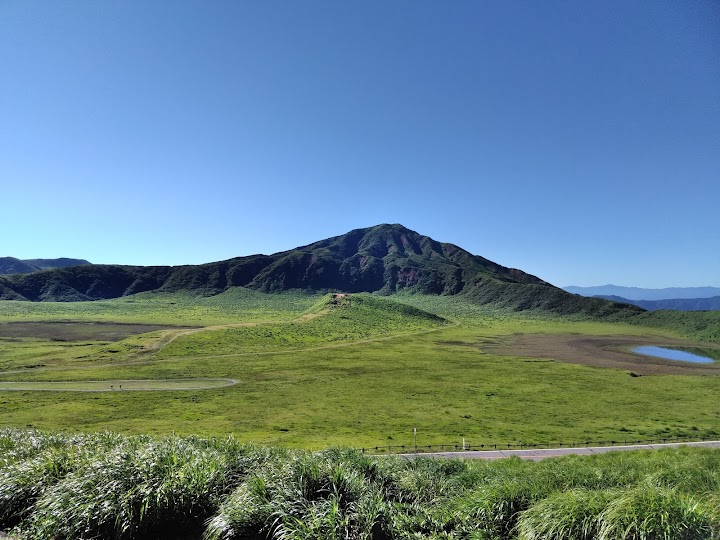
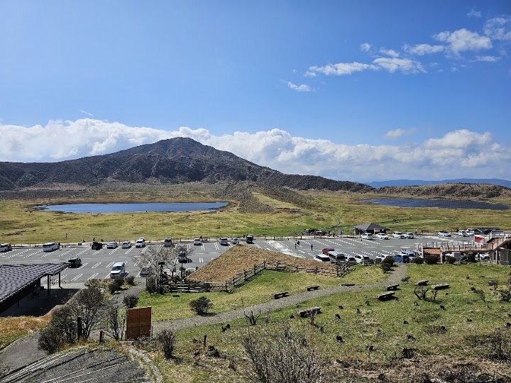
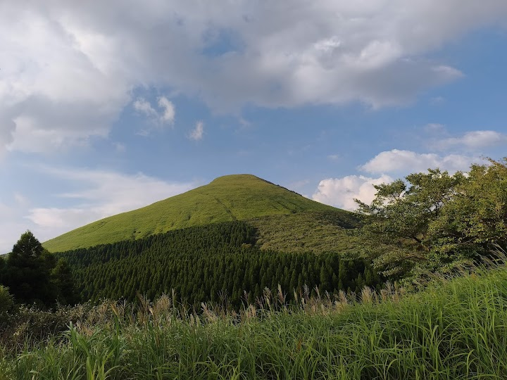
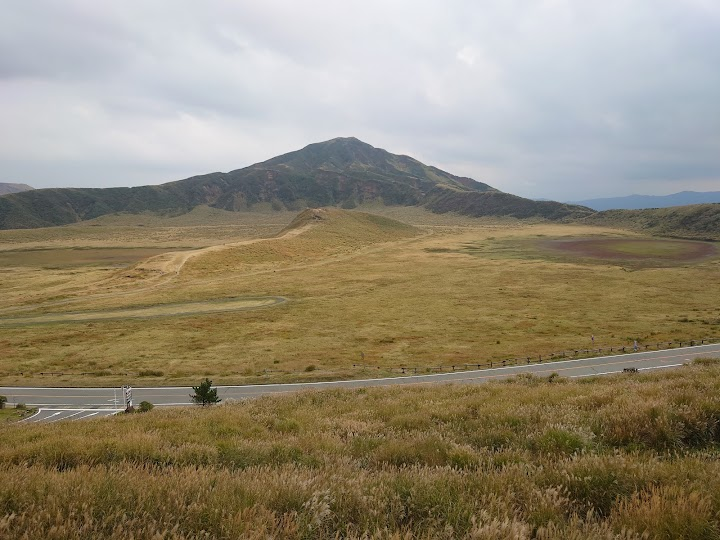

Kusasenri Observatory
A scenic overlook above Kusasenri, a wide grassy plain inside the Aso crater, with Mt Naka, an active volcano, behind. The volcanic landscape is unusual and dramatic even in cloud and rain.
Open in Google Maps (street view, more photos and reviews there)






Visitor tips on finding it and getting there
It’s a place to enjoy sunset. The view is superb. This place is near to the Aso volcano museum so you can try to park there Incase that the observatory parking is full. Even if you don’t come on the sunset time you can still enjoy the view of the city and its surrounding. Do come and enjoy your time here. We were on the way to kumamoto and this is the last stop before heading to town. Please note that on the way down to the city please drive carefully as the animal will come out at night time :)